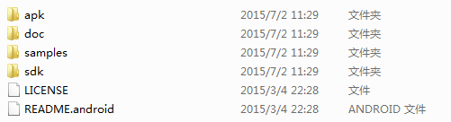

Android Studio¶
Install¶
mac Android Studio
OpenCV¶
OpenCV 配置 (java 层)¶
进入 官网 下载OpenCV4Android并解压。目录结构如下图所示
其中，
sdk目录即是我们开发opencv所需要的类库, 包括 java 层和jni 层代码；samples目录中存放着若干opencv应用示例（包括人脸检测等），可为我们进行android下的opencv开发提供参考；doc目录为opencv类库的使用说明及api文档等；apk目录则存放着对应于各内核版本的manager应用安装包。此应用用来管理手机设备中的opencv类库，在运行opencv应用之前，必须确保手机中已经安装了OpenCV_2.4.3.2_Manager_2.4_*.apk，否则opencv应用将会因为无法加载opencv类库而无法运行（下篇文章会介绍不提前安装openCV Manager，即可运行openCV的方法）。好像不需要manager
static { if (!OpenCVLoader.initDebug()) { // Handle initialization error } }
注解
OpenCVLoader.initDebug() must be used for debugging purposes only as when you are developing locally on your machine. But for production purposes where you need to release the app on Play Store, etc. you must use OpenCVLoader.initAsync(). Actually initializing the OpenCVLoader takes some time depending upon the phone. So if you load it using initDebug(), then it would be executed in the main thread, which may block the UI for a fractional time. So it is advised to load the OpenCV in background which can be achieved using initAsync()
将OpenCV引入 AS
在 AS 中选择 File -> Import Module ，找到OpenCV解压的路径，选择
sdk/java文件夹。
更新build.gradle信息
在 AS 中的左上角选择Project视图，在oepnCVLibrary2411文件夹里，打开build.gradle（有很多重名的文件，一定找对openCV库文件下的），修改文件中的1）compileSdkVersion 2）buildToolsVersion 3） minSdkVersion 4）targetSdkVersion，将其内容与app文件夹下的build.gradle中信息相一致。点击上方提示的黄色提示框内的Try Again进行更新。

添加Module Dependency
右键app文件夹，选择Open Module Settings，在app module的Dependencies一栏中，点击右上角的绿色加号，将openCVLibrary2411添加进去，点击确定。


复制libs文件夹到项目中
在OpenCV的解压包中，将
sdk/native/libs文件夹复制到<module name>/src/main目录下，并将其重命名为 jniLibs 。自此，OpenCV的环境就配置好了。可以将
OpenCV-android-sdk/samples/tutorial-1-camerapreview中的layout文件，java文件，放入工程中，修改AndroidManifest.xml，添加使用摄像机的权限，即可测试是否成功了。
这种方法生成的apk 体积会很大，可以通过修改module的 build.gradle 减小体积
android {
// Some other configuration here...
splits {
abi {
enable true
reset()
include 'x86', 'armeabi', 'armeabi-v7a', 'mips'
universalApk false
}
}
}
使用OpenCV的三种方法 1¶
其实OpenCV最简单的使用方式是使用manager(安装 apk 目录下对应的安装包，将java层代码导入，使用 OpenCVLoader.initAsync() 加载库)。但是这种方式除了安装自己的apk还需要安装manager的apk，用户体验十分不好，不推荐使用。下面的三种方式将完全脱离这个manager的apk 2
前期准备¶
首先新建一个项目，将OpenCV sdk目录下的 native 目录拷到项目根目录。然后在module的 src/main/ 新建 jni 目录
在 jni 文件夹下新建两个文件 Android.mk 和 Application.mk
Application.mk
APP_STL := gnustl_static APP_CPPFLAGS := -frtti -fexceptions APP_ABI := armeabi armeabi-v7a # 指定编译平台，选择范围限制在导入的OpenCV libs APP_PLATFORM := android-8 #指定Android平台(根据自身情况而定)
Android.mk
LOCAL_PATH := $(call my-dir) include $(CLEAR_VARS) OpenCV_INSTALL_MODULES := on # 作用是在打包apk时加载OpenCV的动态库 OpenCV_CAMERA_MODULES := off OPENCV_LIB_TYPE :=STATIC # 指定OpenCV库的类型为静态库 ifeq ("$(wildcard $(OPENCV_MK_PATH))","") include ..\..\..\..\native\jni\OpenCV.mk else include $(OPENCV_MK_PATH) endif LOCAL_MODULE := OpenCV # 本地so名称 LOCAL_SRC_FILES := # 指定jni目录中src文件 LOCAL_LDLIBS += -lm -llog # 指定本地链接库 include $(BUILD_SHARED_LIBRARY)
在 gradle.properties 中设置:
android.useDeprecatedNdk=true //使用旧版的ndk功能（不添加会使用实验性的ndk构建工具)
在 local.properties 中配置ndk目录:
ndk.dir=D\:\\AndroidSDK\\sdk\\ndk-bundle
在module的 build.gradle 中添加
android{
...
sourceSets.main.jni.srcDirs = [] //禁止自带的ndk功能/禁止自动调用ndk-build命令,防止 :abbr:`AS (Android studio)` 自己生成Android.mk编译jni工程
sourceSets.main.jniLibs.srcDirs = ['src/main/libs','src/main/jniLibs'] //重定向so目录为src/main/libs和src/main/jniLibs，原来为src/main/jniLibs
task ndkBuild(type: Exec, description: 'Compile JNI source with NDK') {
Properties properties = new Properties()
properties.load(project.rootProject.file('local.properties').newDataInputStream())
def ndkDir = properties.getProperty('ndk.dir')
if (org.apache.tools.ant.taskdefs.condition.Os.isFamily(org.apache.tools.ant.taskdefs.condition.Os.FAMILY_WINDOWS)) {
commandLine "$ndkDir/ndk-build.cmd", '-C', file('src/main/jni').absolutePath
} else {
commandLine "$ndkDir/ndk-build", '-C', file('src/main/jni').absolutePath
}
}
tasks.withType(JavaCompile) {
compileTask -> compileTask.dependsOn ndkBuild
}
task ndkClean(type: Exec, description: 'Clean NDK Binaries') {
Properties properties = new Properties()
properties.load(project.rootProject.file('local.properties').newDataInputStream())
def ndkDir = properties.getProperty('ndk.dir')
if (org.apache.tools.ant.taskdefs.condition.Os.isFamily(org.apache.tools.ant.taskdefs.condition.Os.FAMILY_WINDOWS)) {
commandLine "$ndkDir/ndk-build.cmd",'clean', '-C', file('src/main/jni').absolutePath
} else {
commandLine "$ndkDir/ndk-build",'clean', '-C', file('src/main/jni').absolutePath
}
}
clean.dependsOn 'ndkClean'
}
这时候， 使用gradle构建一下(点击 AS 右侧的gradle展开，双击ndkBuild进行构建)，如果能成功构建出so，说明配置没问题。

第一种方法(纯jni, 静态链接库)¶
基于上面的所有步骤
声明java层的native方法
public class OpenCVHelper { static { System.loadLibrary("OpenCV"); } public static native int[] gray(int[] buf, int w, int h); }
使用 javah 命令生成头文件，内容如下
/* DO NOT EDIT THIS FILE - it is machine generated */ #include <jni.h> /* Header for class cn_edu_zafu_opencv_OpenCVHelper */ #ifndef _Included_cn_edu_zafu_opencv_OpenCVHelper #define _Included_cn_edu_zafu_opencv_OpenCVHelper #ifdef __cplusplus extern "C" { #endif /* * Class:cn_edu_zafu_opencv_OpenCVHelper * Method: gray * Signature: ([III)[I */ JNIEXPORT jintArray JNICALL Java_cn_edu_zafu_opencv_OpenCVHelper_gray (JNIEnv *, jclass, jintArray, jint, jint); #ifdef __cplusplus } #endif #endif
新建cpp文件，实现对应的方法，就是灰度处理
#include "cn_edu_zafu_opencv_OpenCVHelper.h" #include <stdio.h> #include <stdlib.h> #include <opencv2/opencv.hpp> using namespace cv; extern "C" { JNIEXPORT jintArray JNICALL Java_cn_edu_zafu_opencv_OpenCVHelper_gray(JNIEnv *env, jclass obj, jintArray buf, int w, int h); JNIEXPORT jintArray JNICALL Java_cn_edu_zafu_opencv_OpenCVHelper_gray(JNIEnv *env, jclass obj, jintArray buf, int w, int h) { jint *cbuf; cbuf = env->GetIntArrayElements(buf, JNI_FALSE ); if (cbuf == NULL) { return 0; } Mat imgData(h, w, CV_8UC4, (unsigned char *) cbuf); uchar* ptr = imgData.ptr(0); for(int i = 0; i < w*h; i ++){ //计算公式：Y(亮度) = 0.299*R + 0.587*G + 0.114*B //对于一个int四字节，其彩色值存储方式为：BGRA int grayScale = (int)(ptr[4*i+2]*0.299 + ptr[4*i+1]*0.587 + ptr[4*i+0]*0.114); ptr[4*i+1] = grayScale; ptr[4*i+2] = grayScale; ptr[4*i+0] = grayScale; } int size = w * h; jintArray result = env->NewIntArray(size); env->SetIntArrayRegion(result, 0, size, cbuf); env->ReleaseIntArrayElements(buf, cbuf, 0); return result; } }
将cpp文件编译进去，在
Andorid.mk文件中加入LOCAL_SRC_FILES := cn_edu_zafu_opencv_OpenCVHelper.cpp
在java层写个测试方法测试一下是否进行灰度化了
Bitmap bitmap = ((BitmapDrawable) getResources().getDrawable(R.drawable.ic)).getBitmap(); int w = bitmap.getWidth(), h = bitmap.getHeight(); int[] pix = new int[w * h];bitmap.getPixels(pix, 0, w, 0, 0, w, h); int [] resultPixes=OpenCVHelper.gray(pix,w,h); Bitmap result = Bitmap.createBitmap(w,h, Bitmap.Config.RGB_565); result.setPixels(resultPixes, 0, w, 0, 0,w, h); img.setImageBitmap(result);
运行效果如下，灰度化后的结果

上面的这种方法生成的so库的大小见下图，大约有1.4M左右

第二种方法 (纯jni，动态链接库)¶
在第一种基础上，修改 Android.mk 文件为
LOCAL_PATH := $(call my-dir) include $(CLEAR_VARS) OpenCV_INSTALL_MODULES := on OpenCV_CAMERA_MODULES := off OPENCV_LIB_TYPE := SHARED # 指定OpenCV库的类型为动态库 ifeq ("$(wildcard $(OPENCV_MK_PATH))","") include ..\..\..\..\native\jni\OpenCV.mk else include $(OPENCV_MK_PATH) endif LOCAL_MODULE := OpenCV LOCAL_SRC_FILES := cn_edu_zafu_opencv_OpenCVHelper.cpp LOCAL_LDLIBS += -lm -llog include $(BUILD_SHARED_LIBRARY)
即改为动态库加载的方式，这时候再用ndkBuild一下，你会发现会输出一些警告以及一部分红色的内容

生成的so库的大小为310k，小了好几倍
这时候如果你直接取运行程序，会报错误

原因是我们使用的是动态库加载方式，还需要将依赖的so(libopencv_java3.so, 位于native目录)加进去
将其拷贝到 jniLibs 目录中去，这里只拷贝armeabi和armeabi-v7a中的，至于其他的按需拷贝

这时候运行就不会报错了。
既然我们使用了动态链接库，那么我们同样也可以使用java层的接口，优点是java开发速度相对快一点。
第三种方法(基于第二种方法, 纯java)¶
在此之前，我们需要将sdk目录中的java代码拷到项目中去

但是 org.opencv.engine 包中是一个aidl，我们需要将它剪贴到 aidl 目录中去

最后还有一个资源文件 attrs.xml ，拷过来

build一下项目，不出意外应该会报错，这时候找到该类，引入自己的R文件包就可以了
再次build应该就不会有什么问题了。
java层的测试方法
OpenCVLoader.initDebug(); Mat rgbMat = new Mat(); Mat grayMat = new Mat(); Bitmap srcBitmap = BitmapFactory.decodeResource(getResources(), R.drawable.ic); Bitmap grayBitmap = Bitmap.createBitmap(srcBitmap.getWidth(), srcBitmap.getHeight(), Bitmap.Config.RGB_565); Utils.bitmapToMat(srcBitmap, rgbMat);//convert original bitmap to Mat, R G B. Imgproc.cvtColor(rgbMat, grayMat, Imgproc.COLOR_RGB2GRAY);//rgbMat to gray grayMat Utils.matToBitmap(grayMat, grayBitmap); //convert mat to bitmap img.setImageBitmap(grayBitmap);
警告
使用 OpenCVLoader.initDebug() ;进行初始化而不是使用 OpenCVLoader.initAsync()
这种方法的特点是理都在java层，不怎么会涉及jni层的代码，除非java层完成不了的工作会转移到jni层去。
三种方法各有各的优点，根据自己的情况进行选择。
如果c++特别好的，建议使用第一种方法
如果更习惯java代码的，并且java层的函数都能进行处理的，建议选择第三种方法
第二种方法建议在第三种方法不满足条件的情况下进行辅助使用，因为使用了第三种方法的前提是使用第二种方法的动态链接库。
重要
纯jni实现时
Android.mk文件中LOCAL_SRC_FILES属性的设置.cpp文件和.h文件中，方法名及文件名的一致性
java层实现时
不需要设置
LOCAL_SRC_FILES属性不需要.cpp文件和.h文件
需要配置好opencv库
最后附上 源码
OpenCV with contribe module¶
方法一：使用github上的一个脚本构建
git clone https://github.com/tzutalin/build-opencv-for-android.git //下载 build-opencv-for-android # 若opencv库还未下载，直接根据readme执行，否则 # 1. 将下载好的opencv 及contribe代码解压到 build-opencv-for-android 目录下 # 2. 将这两个文件夹重命名为 opencv 和 opencv_contrib # 3. 按readme执行相应命令 # 这里若不想修改环境变量，NDK路径可在命令行直接输入 ./build-android-opencv.sh <ndk path> # 若希望减少编译时间，可只保留想要的ABI进行编译，修改build-android-opencv.sh 第6 行代码： declare -a ANDROID_ABI_LIST=("x86" "x86_64" "armeabi" "arm64-v8a" "armeabi-v7a" "mips" "mips64") # 编译得到的库在 android_opencv注解
另外说明一下 ndk最好是r10d以下的, sdk要用旧版的, 不然会报
lib_target_sdk_target-NOTFOUND The “android” command is deprecated. For manual SDK, AVD, and project management, please use Android Studio.
的错误。
方法二 3：
将需要用到的include 文件从
<opencv install path>/include/opencv2复制到<opencv sdk package path>/sdk/native/jni/include/opencv2将需要的文件复制到项目中
设置
Android.mkinclude <opencv sdk package path>/sdk/native/jni/OpenCV.mk LOCAL_C_INCLUDES += <opencv sdk package path>/sdk/native/jni/include
在单元测试中使用OpenCV¶
要先将系统级的opencv java 环境配好，设好环境变量 LD_LIBRARY_PATH , 然后重启 AS
export LD_LIBRARY_PATH = $LD_LIBRARY_PATH:/path/to/folder/contain/libopencv_javaxxx.so(/usr/local/opencv/share/OpenCV/java/)
Use java -XshowSettings:properties to show the java.library.path (and others) value.
一些问题的解决¶
找不到libopencv_java300 : 将项目下相应文件夹下的 libopencv_java3改成它。
引用第三方项目，打包Jar包，AAR包¶
相关概念¶
库和包¶
什么是AAR包？ AAR包相比于jar包，区别在哪儿？
假如我们希望提供一个带有资源文件的第三方库给别人使用，总不能直接把源代码给别人，但是我们知道eclipse打包的时候不能包含res的资源文件，于是Android在发布 AS 的时候就发布了一种独有的格式AAR，专门用于打包UI组件库。与jar相比其多了一些UI组件用到的属性、图片等一系列文件，它的好处在于你不需要再多创建一个Library Module，只需引用这个AAR文件即可，Android Sudio会自动把AAR包里的文件跟你的项目融合。
aar包含所有资源，class，xml布局文件以及res资源文件全部包含。注意是全部。jar只包含了class文件与清单文件，不包含资源文件，如图片等所有res中的文件。
什么是so库？什么是ABI？相关的处理器型号在构建APP时有什么区别？
Android系统目前支持 七种不同的CPU架构 ，每一种都关联着一个相应的 应用程序二进制接口 （Application Binary Interface, ABI）。 ABI 定义了二进制文件（尤其是.so文件）如何运行在相应的系统平台上，从使用的指令集，内存对齐到可用的系统函数库。
so库的好处：
so机制让开发者最大化利用已有的C和C++代码，达到重用的效果，利用软件世界积累了几十年的优秀代码；
so是二进制，没有解释编译的开消，用so实现的功能比纯java实现的功能要快；
so内存分配不受Dalivik/ART的单个应用限制，减少OOM；
相对于java代码，二进制代码的反编译难度更大，一些核心代码可以考虑放在so中。
so库的load:
相对路径load:
System.loadLibrary("media_jni"); 其中media_jni名字会被自动替换成libmedia_jni.so在使用相对路径load时，需要注意相应的so库是否被打入到 aar包的libs目录下。此处需要注意ABI类型
绝对路径load:
System.load("/绝对路径/libmedia_jni.so");绝对路径可以避免这个问题，但是要确保具有相应路径的访问权限，在接入AAR时候，假设合作方是厂商ROM级别的，部分路径需要提前协调。
jni层的方法对应关系：
全路径
将
.置换为_
例如，假设当前函数 native_init() 函数位于 android.media 这个包中，它的全路径名应该是 android.media.MediaScanner.native_init ，而JNI层函数的名字是 android_media_MediaScanner_native_init 。
引用第三方项目¶
首先将第三方项目作为Module导入到我们的项目中，具体就是

导入之后，需要我们在 引用第三方项目的module 的 builg.gradle 中设置
dependencies{
compile project(':这里为第三方项目名称')
}
关于jar包¶
使用 AS 打jar包¶
如果想使用 AS 将我们的项目打成jar包，首先要明确的是 只能将java文件打包，而不能打包res等资源文件。
首先module只能是library，而不能是application，所以在module的
build.gradle中， 将app plugin: 'com.android.application'改为apply plugin: 'com.android.library'然后在根节点，而不是在任何标签下，添加代码:
task makeJar(type: Copy) { delete 'build/libs/XXXXX.jar' from('build/intermediates/bundles/release/') into('build/libs/') include('classes.jar') rename ('classes.jar', 'XXXXX.jar') } makeJar.dependsOn(build) //在终端执行生成JAR包 // gradlew makeJar
之后在终端执行 gradlew makeJar ，之后就可以在module的
build/libs目录下找到打包好的jar包
引用jar包¶
首先将需要引用的jar包拷贝到module的
libs目录下之后在module的
build.gradle中设置dependencies{ compile files('libs/XXXXX.jar') }
如果不想自己在gradle中手动添加代码去关联，我们也可以使用下面的方法
菜单栏选择 File —> Project Structure
在弹出的Project Structure 对话框中, 选择module, 然后点击 Dependencies 选项卡
点击绿色的加号选择File dependency. 然后选择要添加的jar包即可。完成上边的操作后在module目录下的build.gradle文件中，会自动引入类库。
so库的问题¶
我们在使用第三方jar的时候，常常会遇到SDK开发平台给的不同CPU架构的so文件，那么我们怎么添加这些so文件？两种方法
方法一
在src/main/目录下新建jniLibs目录，然后将所有的so文件拷入该目录下，工程会自动加载src目录下的so动态库
需要注意的是：jar和so的版本号必须一致。
方法二
在app/libs目录下放入对应不同CPU架构的so文件。但是这样工程并不会自动加载libs下的so文件
需在gradle编译时，通过加入代码：jniLibs.srcDir ‘libs’ 来说明so的路径为该libs路径。
AAR包¶
打aar包¶
要输出aar文件，必须将Module配置为library，首先需要我们在项目gradle中将app plugin改为
apply plugin: 'com.android.library'
要输出 aar：apply plugin:’com.android.library’
要输出 apk：apply plugin:’com.android.application’
之后在defaultConfig{}节点中去掉applicationId, versionCode, versionName 等内容
还需要我们在manifest的application标签的主活动中去掉
<intent-filter> <action android:name="android.intent.action.MAIN" /> <category android:name="android.intent.category.LAUNCHER" /> </intent-filter>
删除Android Manifest中的所有权限声明，删除Application子节点，只保留四大组件的子节点？
一般情况下，我们还需要去掉
android:icon="@mipmap/ic_launcher" android:label="@string/app_name"
等内容，防止在引用的时候发生冲突！ 或者在引用aar包的项目的application标签下添加:
tools:replace="android:label,android:icon"
解决冲突！
项目代码中的switch语句需要改为if语句
Library用到的第三方依赖库，有两种加入方式
打包时在build.gradle中直接compile的方式：在引用该包的新项目的gradle文件中，于引入aar文件的地方加入 transitive=false（表示当前依赖是否可以传递）
dependencies{ compile（name: 'aarName', ext:'aar') {transitive=false} }使用jar包的形式：一般来说，当你compile过一个第三方库的时候，Android Stuido会把这个库下载到本地（~/.gradle/caches/modules-2/files-2.1)，里面就含有他的jar包，将其复制到 [module_name]/libs 下就可以。（记得将gradle中原先引用包的地方注释）
在做了上述步骤之后，同步一下我们的项目（打开 Gradle projects，依次展开 <ModuleName> -> <ModuleName> -> Tasks -> build，双击 assemble ），就能在app/build/outputs/aar目录下找到我们打包好的aar文件
如果只想生成 mykit-release.aar，则双击 assembleRelease
如果只想生成 mykit-debug.aar，则双击 assembleDebug
根据渠道和 BuildType 的不同，在相应的目录下可以找到。比如对 BuildType 为 debug 的配置，输出为： [ModuleName]/build/outputs/aar/[ModuleName]-debug.aar。
一份 aar 文件其实就是一份 zip 包，和 jar 不同的是，它将一些资源文件、第三方库文件、so 文件等等都打包在内，而代码文件编译后压缩在classes.jar中。
引用arr包¶
使用配置依赖的方式
首先需要将 aar 文件放入引用Module的libs目录下（一般是app/libs），和一般的jar文件类似；
然后在gradle配置文件中把libs 目录放入依赖：
repositories{ flatDir{ dirs 'libs' } }
在gradle文件中使用依赖的方式引用aar，即在 dependencies{} 标签下进行关联：
compile(name:'你引入的aar文件的名称，不包含后缀', ext:'aar')
重新构建一下工程，在Module的 build/intermediates/exploded-aar 目录下，既可以看到导入的aar生成的临时文件。
注解
使用时注意：
在项目的Android Manifest文件中添加所有aar包用到的权限。
假如aar包使用到类似推送、地图等第三方库需要根据包名生成appKey的情况，则项目的包名已经变为使用者的包名而不是原aar项目的包名。此处需要用户自行设置。
import
一些其他问题¶
2 原有项目所依赖的jar包会被正常打包进aar中，但原项目依赖的aar则不会打包进aar 2.1 以外部compile形式所依赖的包，也不会被打包进aar 2.2 记得不要重复引用，避免壳工程引用的jar与打包好的aar冲突
3 声明具体支持的so库类型 3.1 最好在构建过程中声明所支持的CPU类型。 Android系统的匹配过程为从高到低，向下兼容，例如：armeabi-v7a类型的CPU支持armeabi 3.2 如果不在BuildType中声明，则默认支持所有类型的so库文件，通过反编译在aar中的lib目录下可以看到所支持的SO库类型 3.3 部分so库在不声明的情况下，默认打在armeabi下，这样会导致armeabi-v7a类型的包找不到相应的so库文件。解决办法就是强制声明为armeabi类型 3.4 注意so库存放的路径 3.5 so库本身是含有包名的，在jni使用的时候，需要将so库方法的名称，与调用so库的代码包名一致 3.6 外部调用aar的壳工程，一般来说，会从aar中使用DexClassLoader，拷贝aar中的so库到相应的目录中。可以使用adb shell 到壳工程指定目录下查看是否so库成功拷贝 3.7 so库可以存放在aar的jniLibs下，也可以存放在壳工程的jniLibs和libs下。 3.8 遇到一次so库崩溃，信息与下段信息类似： http://blog.csdn.net/tankai19880619/article/details/9004619 在其中有相应的解决办法，此处感谢博主，运用文中方法，定位了问题。 4 Application参数的传递问题。 每一个Android App都有一个application context，这个参数需要壳工程传递给我们，调试的时候可以在壳工程的Manifest.xml中指定默认的Application. 并在默认的Application中初始化aar, 5 混淆 aar包也可以指定混淆方式，在提供给对方时，我们需要将代码混淆，在厂商发布时，也需要混淆，这样就存在二次混淆后，AAR包找不到相应类的问题。 解决方法可以让厂商在二次混淆时，keep住我们aar相关代码 6 路径获取 留意相关路径的获取，在普通的Appliaction中，数据默认存储在 /data/data/packageName/中，当aar内嵌在其他应用中，存储路径跟随主工程，在获取数据时路径切记不能写死。 7 Assert资源获取 因为是内嵌在其他应用中，原本APK中的Assert目录内的资源可能找不到。解决方法是，可以将Assert目录内的资源打包成一个ZIP文件放在 /RAW目录下。 在项目初始化的时候，解压到指定目录下。 使用的时候在AssertManager中使用绝对路径获取资源 在于前端页面交互上，JS相关代码及资源一般也存放在Assert目录下，在webview.load（）时，可以通过 file:/ 绝对路径 ，来加载 PS:Assert 目录与 /raw 目录的区别：访问方式，目录结构，大小写，压缩方式等。 8 第三方登录 因为微信微博等三方登录需要使用PackageName申请APPID,APPKEY, 需要使用壳工程的packageName。 9 常见BUG 9.1 java.lang.NoClassDefFoundError NoClassDefFoundError错误的发生，是因为Java虚拟机在编译时能找到合适的类，而在运行时不能找到合适的类导致的错误。例如在运行时我们想调用某个类的方法或者访问这个类的静态成员的时候，发现这个类不可用，此时Java虚拟机就会抛出NoClassDefFoundError错误。与ClassNotFoundException的不同在于，这个错误发生只在运行时需要加载对应的类不成功，而不是编译时发生。 9.2 jar包引用重复 9.3 contentProvider在注册时出现重名情况 9.4 注意不要在壳工程的Activity中传递Context,可能出现Context为NULL的情况，最好在 壳工程的Application来初始化Context 9.5 java.lang.ExceptionInInitializerError 原因如果你在别的类调用getInstance，就会报错ExceptionInInitializerError。这是因为类加载时不会为实例变量赋值，对象创建时不会为静态变量赋值。我们调用getInstance时，此类就开始加载，加载的时候不会为实例变量赋值，但是会按顺序给静态变量赋值。需要检查变量初始化过程。 9.6 系统切换广播监听 在系统配置改变时，例如横竖屏切换，会导致Activity生命周期的改变。在开发过程中碰到一个问题，在用户将应用点击home键置于后台的情况下切换语言，会导致原有的注册的receiver报错。 排查后发现，在语言切换且应用存活的情况下，并不会走到应用的onDestory方法，而是重新走一次onCreate。 这就导致了注册两次而报错。
单元测试¶
分为androidTest(The Android NDK builds libraries for the Android platform )和test(library for HOST platform),
SDK¶
降级¶
Find your Android SDK folder
Locate the “tools” subfolder and rename it to “tools1” (just to keep a backup copy of the original tools folder)
Likewise, rename platform-tools to platform-tools1
Download from google repository the SDK Tool version you want to downgrade to (for instance: http://dl-ssl.google.com/android/repository/tools_r22.6.2-macosx.zip) and unpack it.
The ZIP file you downloaded contains a tools folder that has to be moved to your Android SDK folder.
Likewise, download the platform tools (for instance: http://dl-ssl.google.com/android/repository/platform-tools_r19.0.1-macosx.zip), and extract it in your SDK folder.
不同平台格式如下:
http://dl-ssl.google.com/android/repository/tools_rXXX-windows.zip
http://dl-ssl.google.com/android/repository/tools_rXXX-linux.zip
http://dl-ssl.google.com/android/repository/tools_rXXX-macosx.zip
platform-tools 类似。
重要
tools 和 platform-tools 的版本号是不一样的，具体请参考： https://developer.android.com/studio/releases/sdk-tools.html https://developer.android.com/studio/releases/platform-tools.html
gradle¶
若gradle下载太慢，可以到官网下载对应版本放到 ~/.gradle/wrapper/dists/gradle-x.x-all/xxxx/ 下
build.gradle 中添加的dependencies 等可以在 ~/.gradle/caches/modules-2/files-2.1/ 中找到
Gradle的一些基本依赖配置方式如下:
android {
defaultConfig {
publishNonDefault true
externalNativeBuild {
ndkBuild {
// Passes optional arguments to ndk.
arguments "NDK_APPLICATION_MK:=src/main/jni/Application.mk" # 默认参数
// Sets optional flags for the C compiler.(这部分可以在mk文件中设置)
cFlags "-Werror", "-O3", "-ffast-math"
cppFlags "-fexceptions", "-frtti" "-fexceptions" "-std=c++11"
}
}
ndk {
//.so文件依赖于硬件环境，不同的CPU架构对应不同的.so文件，abiFilters关键字能够指定Android 所支持的CPU架构
abiFilters 'armeabi', 'armeabi-v7a', 'arm64-v8a', 'mips', 'mips64', 'x86', 'x86_64'
}
}
externalNativeBuild {
ndkBuild {
path 'src/main/jni/Android.mk'
}
}
sourceSets{
main{
jniLibs.srcDirs = ['src/main/jniLibs/libs'] //动态链接库的路径地址，用于项目构建时，Native寻找和链接相关的so文件
}
}
}
dependencies {
compile fileTree(dir:'xxx',include:['*.jar','*.xxx']) //将某个目录下所有符合扩展名的文件作为依赖
compile 'com.xx.xx:ProjectName:Version' //配置Maven库为依赖
compile project(':otherModule') //配置另一个module作为本Module的依赖，被依赖的Module必须被导入到当前工程中
compile file('xxx.jar') // 配置某个jar包作为依赖
}
adb¶
adb devices
adb shell pm list packages // 查看安装的应用
adb uninstall <package name> // 卸载应用
手机¶
获取 Google Play 服务¶
先下载安装谷歌安装器
安装三个文件（框架等）
重启手机
然后下载安装google play 服务
CPU架构¶
硬件 |
备注 |
||
arm64-v8a |
第8代 |
64位ARM处理器 |
2011年15月以后的生产的大部分Android设备 |
armeabi-v7a |
第7代及以上 |
(32?)ARM 处理器 |
2010年起 |
armeabi |
第5代、第6代 |
ARM处理器 |
|
mips64 |
|||
mips |
2012年起 |
||
x86_64 |
64位的平板 |
2014年起 |
|
x86 |
32位平板、模拟器 |
2011年起 |
Native code¶
nkd-build¶
mk 文件¶
Android.mk
LOCAL_PATH := $(call my-dir) # 返回当前路径 include $(CLEAR_VARS) # 让GNU MAKEFILE为你清除许多LOCAL_XXX变量（例如 LOCAL_MODULE, LOCAL_SRC_FILES, LOCAL_STATIC_LIBRARIES, 等等...),除LOCAL_PATH LOCAL_MODULE:= # 必须定义，以标识你在Android.mk文件中描述的每个模块。 LOCAL_SRC_FILES := # 必须包含将要编译打包进模块中的C或C++源代码文件 LOCAL_SRC_FILES += # += 表示在变量之前的值基础上叠加 # eg.. include $(LOCAL_PATH)/../../../../native/jni/OpenCV.mk # 相对路径 LOCAL_C_INCLUDES += $(LOCAL_PATH) LOCAL_C_INCLUDES += $(LOCAL_PATH)/../../../../native/jni/include LOCAL_LDLIBS += -llog -ldl -latomic # -llog 保证c++代码中可以使用 <android/log.h> # release 使用 LOCAL_CFLAGS := -Werror -O3 -ffast-math # debug 使用 LOCAL_CFLAGS := -Werror -O0 -ffast-math -g2 include $(BUILD_SHARED_LIBRARY) # 指向一个GNU Makefile脚本（应该就是在build/core目录下的shared_library.mk），负责收集自从上次调用'include $(CLEAR_VARS)'以来，定义在LOCAL_XXX变量中的所有信息，并且决定编译什么，如何正确地去做。并根据其规则生成静态库。同理对于静态库。
Application.mk
APP_MUDULES := xocr APP_STL := gnustl_static #c++_shared # APP_CPPFLAGS := -frtti -fexceptions -std=c++11 APP_ABI := armeabi-v7a arm64-v8a armeabi mips mips64 x86_64 x86 APP_PLATFORM := android-21
重要
mk 文件先于gradle起作用，所以gradle中的配置参数会覆盖mk中的配置
useDeprecatedNdk¶
externalNativeBuild¶
android {
...
defaultConfig {
...
publishNonDefault true
externalNativeBuild { // 这部分可以不要
ndkBuild {
// Passes optional arguments to ndk.
arguments "NDK_APPLICATION_MK:=src/main/jni/Application.mk" # 默认参数
// Sets optional flags for the C compiler.(这部分可以在mk文件中设置)
cFlags "-Werror", "-O3", "-ffast-math"
cppFlags "-fexceptions", "-frtti" "-fexceptions" "-std=c++11"
}
}
ndk {// 此时，Application.mk 中的 APP_ABI 不起作用，需要使用module 的build.gradle 进行配置
//moduleName "xocr"
// externalNativeBuild 形式时，Application.mk中的APP_ABI不起作用，所以使用这里的abiFilters
abiFilters 'armeabi', 'armeabi-v7a', 'arm64-v8a', 'mips', 'mips64', 'x86', 'x86_64'
}
}
externalNativeBuild {
ndkBuild {
path 'src/main/jni/Android.mk'
}
}
}
使用 externalNativeBuild 模式时，生成的so文件在
<module>/build/intermediates/ndkBuild/下生成module library的时候，使用 gradle -> build -> assembleRelease
Cmake (>=AS2.2)¶
配置
使用时只需在java层用native关键字声明native层的函数，然后按ALT+ENTER选第一项即可在cpp文件里自动生成函数头，而不再需要像老方法一样使用javah来获得正确的函数头。
Debug¶
Java code¶
Native code(AS3.0.1)¶
ndk-build 4¶
在主module的
build.gradle中设置dependencies{ compile project(path:':<module name>', configuration: 'debug') }
在library module 中
android{ ... defaultConfig{ publishNonDefault true } buildTypes { debug { jniDebuggable true } } }
运行调试
Run -> Edit Configurations… -> Android App -> app -> Debugger -> Native, 然后debug
Run , 然后 Attach debugger to Android process, 选Native
Android.mk设置LOCAL_CFLAGS += -O0 -g2否则lldb 无法查看 变量值将native code 中变量的值打印到LogCat
any-simple-or-easy-way-to-debug-android-ndk-code
how-to-get-printf-messages-written-in-ndk-application
is-stdcout-usable-in-android-ndk
Android.mk设置LOCAL_LDLIBS += -llog代码中使用
__android_log_print(),__android_log_write()
小技巧
Cmake¶
在library module 中
android{ ... defaultConfig{ publishNonDefault true } buildTypes { debug { jniDebuggable true } } }
直接debug即可
常见问题¶
Error:failed to find Build Tools revision 19.1.0
该类问题属SDK问题，实在连接不上镜像服务器的，SDK管理器里也改了很多配置都无法解决，只能自己手动更新SDK，而此处问题首先下载 build-tools_r19.1-windows.zip ，注意不同版本的不一样。然后接到
<SDK目录>\build-tools，最终会形成这样的目录<SDK目录>\build-tools\android-4.4.2，然后重新打开 AS 问题解决。至于缺什么该放到什么文件夹， 参考这里Activity class {} does not exit
很可能是旧版应用没删干净， 到手机的 设置 -> 应用程序 中卸载； 此外可采取的措施就是清理工程，重新编译，重启IDE等